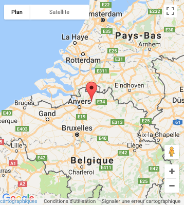

Historique
L'abbaye de Westmalle est fondée en 1794. En 1836, à la suite d'importants travaux d'extension, l'abbaye de Westmalle se voit adjoindre une brasserie. L'abbaye commença à commercialiser sa bière vers 1861, suivant ainsi l'exemple de l'abbaye de Chimay qui avait commencé à commercialiser ses bières dès 1859. La Première Guerre mondiale ralentit fortement les activités de la brasserie, mais en 1921, le père Tarcisius décide d'augmenter la production afin de répondre aux problèmes financiers de la communauté. Entre 1926 et 1929, les moines, qui rencontraient quelques problèmes avec les bières « Dubbel Bruin » et « Extra Gersten », font appel à Hendrik Verlinden, connu pour avoir ensuite fondé sa propre brasserie qui produit les bières Witkap Pater. À partir de 1933 commence la construction d'une nouvelle brasserie, qui permet une production plus importante, et assure à l'abbaye un revenu stable. Sont alors essentiellement produites les bières suivantes : L'Extra, la Dubbel Bruin (double brune) et la Blond. La triple est lancée dans les années 1950 en remplacement de la blond et connaîtra un grand succès. Aujourd'hui, la production atteint près de 130 000 hectolitres de bière par an. L'étiquette rectangulaire visible sur la photo (en dessous) fut changée au cours de l'année 2005 par une étiquette en forme de losange de couleur ocre (voir la photo au-dessus). L'ancienne et la nouvelle étiquette de la Westmalle triple.
Types de bières et leurs caractéristiques
Il en existe deux variétés commercialisées et une variété non commercialisée. On peut trouver la Westmalle double et la Westmalle triple. Ce sont, comme toutes les bières trappistes, des bières de fermentation haute. La première est une bière brune à 7 % tandis que la seconde est une bière blonde qui titre à 9,5 % depuis 2002. Auparavant, la Westmalle triple titrait à 9 %. La Westmalle Extra (« Extra van Westmalle ») n'est brassée que deux fois l’an et n'est pas commercialisée. Elle ne peut être dégustée que sur place. Les Westmalle double et triple sont disponibles en bouteille de 33 cl et de 75 cl. Ces bières se servent, d'après l'étiquette, entre 8 et 14 °C (en effet, une bière de fermentation haute se boit à température de cave, et non glacée). La Westmalle triple peut, par exemple, accompagner les plats à base de fromage ou de viandes rouges. En apéritif, elle peut être accompagnée de dés d'emmental ou de comté épicés par une pointe de moutarde. Les Westmalle ont servi de modèle à de nombreuses bières dites d'abbaye. En particulier, les mentions « double » et « triple », qui désignent le fait que le brasseur ait utilisé deux, (dubbel) ou, non pas trois car elle serait impossible à brasser mais néanmoins plus que deux, (tripel) fois plus de malt que dans une bière dite « classique ».
Fabrication
Les bières trappistes sont brassées suivant une longue tradition, avec des ingrédients naturels exclusivement : eau, malt d'orge, véritables cônes de houblon, sucre et levure de bière typique de Westmalle « la Levure Trappiste Westmalle». Ces bières vives refermentent dans la bouteille, offrant dès lors un goût en constante évolution. Un verre ne sera jamais pareil à l'autre. Le goût dépend avant tout de l'âge, de la méthode de conservation, de la façon de la servir et de la température à laquelle on la sert.
Localisation
|  |
|